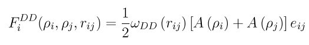
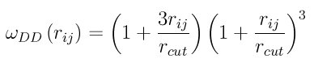
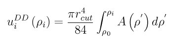

pair_style multi/lucy command
Syntax
pair_style multi/lucy style N keyword ...
- style = lookup or linear = method of interpolation
- N = use N values in lookup, linear tables
Examples
pair_style multi/lucy linear 1000
pair_coeff * * multibody.table ENTRY1 7.0
Description
Style multi/lucy computes a density-dependent force following from the many-body form described in (Moore) and (Warren) as
which consists of a density-dependent function, A(rho), and a radial-dependent weight function, omegaDD(rij). The radial-dependent weight function, omegaDD(rij), is taken as the Lucy function:
The density-dependent energy for a given particle is given by:
See the supporting information of (Brennan) or the publication by (Moore) for more details on the functional form.
An interpolation table is used to evaluate the density-dependent energy (Integral(A(rho)drho) and force (A(rho)). Note that the pre-factor to the energy is computed after the interpolation, thus the Integral(A(rho)drho will have units of energy / length^4.
The interpolation table is created as a pre-computation by fitting cubic splines to the file values and interpolating the density-dependent energy and force at each of N densities. During a simulation, the tables are used to interpolate the density-dependent energy and force as needed for each pair of particles separated by a distance R. The interpolation is done in one of 2 styles: lookup and linear.
For the lookup style, the density is used to find the nearest table entry, which is the density-dependent energy and force.
For the linear style, the density is used to find the 2 surrounding table values from which the density-dependent energy and force are computed by linear interpolation.
The following coefficients must be defined for each pair of atoms types via the pair_coeff command as in the examples above.
- filename
- keyword
- cutoff (distance units)
The filename specifies a file containing the tabulated density-dependent energy and force. The keyword specifies a section of the file. The cutoff is an optional coefficient. If not specified, the outer cutoff in the table itself (see below) will be used to build an interpolation table that extend to the largest tabulated distance. If specified, only file values up to the cutoff are used to create the interpolation table. The format of this file is described below.
The format of a tabulated file is a series of one or more sections, defined as follows (without the parenthesized comments):
# Density-dependent function (one or more comment or blank lines)
DD-FUNCTION (keyword is first text on line)
N 500 R 1.0 10.0 (N, R, RSQ parameters)
(blank)
1 1.0 25.5 102.34 (index, density, energy/r^4, force)
2 1.02 23.4 98.5
...
500 10.0 0.001 0.003
A section begins with a non-blank line whose 1st character is not a “#”; blank lines or lines starting with “#” can be used as comments between sections. The first line begins with a keyword which identifies the section. The line can contain additional text, but the initial text must match the argument specified in the pair_coeff command. The next line lists (in any order) one or more parameters for the table. Each parameter is a keyword followed by one or more numeric values.
The parameter “N” is required and its value is the number of table entries that follow. Note that this may be different than the N specified in the pair_style multi/lucy command. Let Ntable = N in the pair_style command, and Nfile = “N” in the tabulated file. What LAMMPS does is a preliminary interpolation by creating splines using the Nfile tabulated values as nodal points. It uses these to interpolate the density-dependent energy and force at Ntable different points. The resulting tables of length Ntable are then used as described above, when computing the density-dependent energy and force. This means that if you want the interpolation tables of length Ntable to match exactly what is in the tabulated file (with effectively no preliminary interpolation), you should set Ntable = Nfile, and use the “RSQ” parameter. This is because the internal table abscissa is always RSQ (separation distance squared), for efficient lookup.
All other parameters are optional. If “R” or “RSQ” does not appear, then the distances in each line of the table are used as-is to perform spline interpolation. In this case, the table values can be spaced in density uniformly or however you wish to position table values in regions of large gradients.
If used, the parameters “R” or “RSQ” are followed by 2 values rlo and rhi. If specified, the density associated with each density-dependent energy and force value is computed from these 2 values (at high accuracy), rather than using the (low-accuracy) value listed in each line of the table. The density values in the table file are ignored in this case. For “R”, distances uniformly spaced between rlo and rhi are computed; for “RSQ”, squared distances uniformly spaced between rlo*rlo and rhi*rhi are computed.
Note
If you use “R” or “RSQ”, the tabulated distance values in the file are effectively ignored, and replaced by new values as described in the previous paragraph. If the density value in the table is not very close to the new value (i.e. round-off difference), then you will be assigning density-dependent energy and force values to a different density, which is probably not what you want. LAMMPS will warn if this is occurring.
Following a blank line, the next N lines list the tabulated values. On each line, the 1st value is the index from 1 to N, the 2nd value is r (in density units), the 3rd value is the density-dependent function value (in energy units / length^4), and the 4th is the force (in force units). The density values must increase from one line to the next.
Note that one file can contain many sections, each with a tabulated potential. LAMMPS reads the file section by section until it finds one that matches the specified keyword.
Mixing, shift, table, tail correction, restart, rRESPA info:
This pair style does not support mixing. Thus, coefficients for all I,J pairs must be specified explicitly.
The pair_modify shift, table, and tail options are not relevant for this pair style.
This pair style writes the settings for the “pair_style multi/lucy” command to binary restart files, so a pair_style command does not need to specified in an input script that reads a restart file. However, the coefficient information is not stored in the restart file, since it is tabulated in the potential files. Thus, pair_coeff commands do need to be specified in the restart input script.
This pair style can only be used via the pair keyword of the run_style respa command. It does not support the inner, middle, outer keywords.
Restrictions
This command is part of the USER-DPD package. It is only enabled if LAMMPS was built with that package. See the Making LAMMPS section for more info.